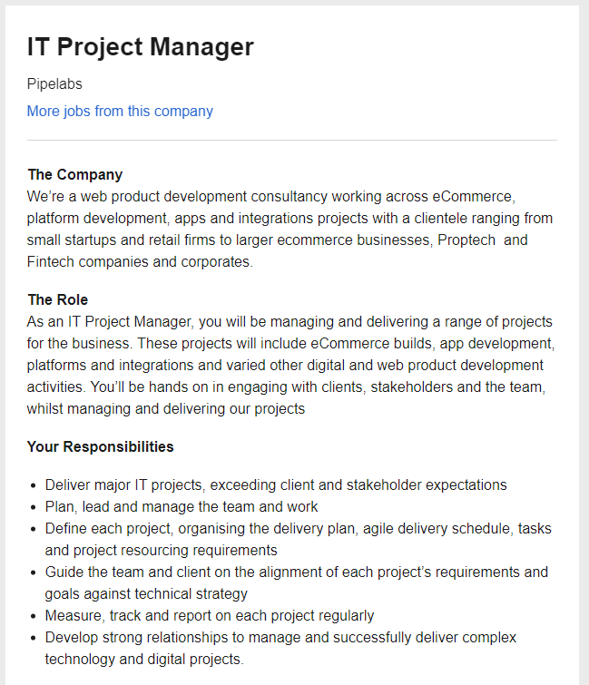
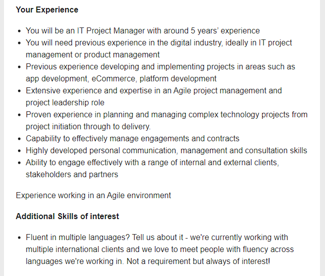

My Ideal Job
Job Listing - IT Project Manager  A description (in your own words) of the position, and particularly what makes this position appealing to you.
This role is for someone that can help initiate IT changes for the company. The successful candidate will be responsible for working closely with customers and shareholders, and assisting in a major way with the development of new applications and web product development
This person needs to be self-motivated and enjoy working towards targets or goals. As to what makes this position appealing to me, I enjoy the atmosphere of change in the work place and work well in an environment that is challenging. When challenges arise and I am able to find solutions for these obstacles, there is a great feeling of pride that comes with knowing I was able to help make work or tasks easier for other people. I want to be able to assist people and help them understand how IT can have a positive influence on their lives. Therefore working in an IT team would be a great opportunity for me to be able to do that and get paid for it.
A description (in your own words) of the skills, qualifications and experience required for the position.
The successful candidate will need to be well organized, and meet deadlines. This person will not only need to be good at communicating, but also be good at listening to what is being communicated to them. They will also need to have sound knowledge of programming and understand the running processes of computers. An understanding of hardware will also be important.
As far as qualifications go, the person starting this position will need to show that they have completed a detailed IT training program, whether it be a university course in IT, or someother occupational further education course specifically designed to teach future employees the skills and knowledge that they need to work in the IT industry in a leading role.
This person should have experience working in a team that was responsible for implementing new digital applications or at least maintaining them. They should have already been part of a team that worked towards deadlines, and when problems arose were able to find effective solutions in an appropriate amount of time.
A description (in your own words) of the skills, qualifications and experience you currently have.
At this point in time I have a small amount of working experience in working with a team that was responsible for the implementation of a new financial computer system for the company. Through working with this team, I learnt more about all the finer processes that are involved with implementing new IT systems. I learnt that tasks such as identifying future obstacles, keeping track of deadlines, and focusing on how this will all effect the end user, are all vital to the success of the project.
A plan describing how you will obtain the skills, qualifications and experience required for the position, building on those you have now. This need not be greatly detailed, (and will probably change significantly over time anyway), but try to be as specific as you can.
First of all, I simply want to complete my Bachelor of Information Technology through RMIT. Through this course I hope to gain a lot of industry knowledge that I will require later for working in IT departments and hopefully as an IT Project Coordinator or Manager. I already have fourteen years of experience working in the real world, and even a small amount of experience working in an IT team, however there is still a long way to go before taking on this sort of role can be a reality. However I see this course as the first big step in the long road to making an IT career possible